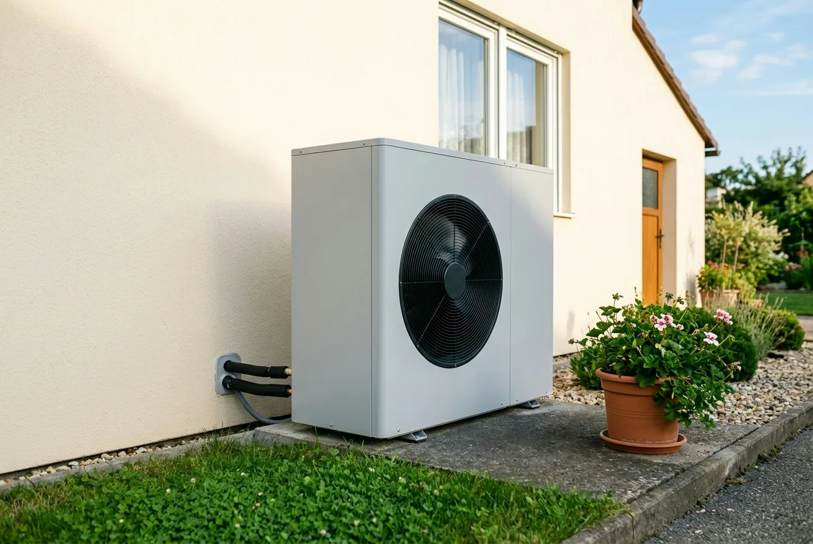
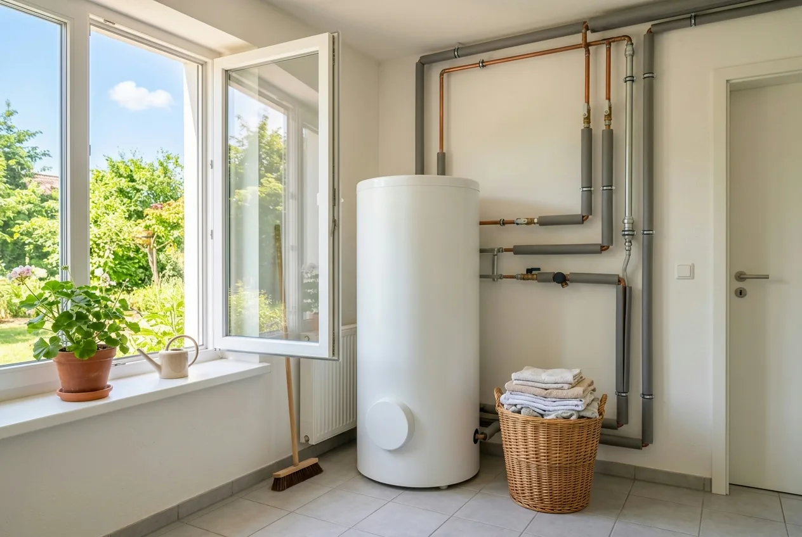

Inhaltsverzeichnis
- Was KfW 458 ist und wer ihn bekommt
- Fördersätze und Deckel ab 21.07.2026
- Beispielrechnung: sechs typische Fälle
- Antragsweg Schritt für Schritt
- Bestätigung zum Antrag (BzA)
- Bearbeitung und Auszahlung
- Typische Ablehnungsgründe
- Bestandsschutz für frühere Anträge
- KfW oder BAFA: die Abgrenzung
- Fazit und Handlungsempfehlung
- Kurz und direkt beantwortet
- Häufige Fragen
Das Wichtigste in Kürze
- 30 Prozent für alle: Die Grundförderung erhält jeder Antragsteller, unabhängig von Einkommen und Selbstnutzung.
- Boni nur für Selbstnutzer: 16 Prozent Klimageschwindigkeitsbonus und 10 bis 40 Prozent Einkommensbonus gibt es nur für die selbstgenutzte Wohneinheit.
- Der Deckel hängt am Einkommen: 80 Prozent bis zu einem zu versteuernden Haushaltsjahreseinkommen von 30.000 Euro, mit Kind unter 18 bis 40.000 Euro, darüber 70 Prozent.
- Höchstens 22.400 Euro: Förderfähig sind für die erste Wohneinheit 28.000 Euro, mehr als 80 Prozent davon sind nicht möglich.
- Reihenfolge entscheidet: Angebot, dann BzA, dann Vertrag mit aufschiebender Bedingung, dann Antrag, und erst nach der Zusage bauen.
- Sie gehen in Vorleistung: Der Zuschuss fließt erst nach Umsetzung, Bezahlung und Einreichung der Nachweise.
Was ist KfW 458, und wer bekommt den Zuschuss?
KfW 458 ist keine Produktbezeichnung, sondern die Programmnummer der Heizungsförderung für Privatpersonen im Wohngebäude. Gefördert wird der Heizungstausch als Zuschuss, nicht als Kredit. Zurückzahlen müssen Sie also nichts. Ausgezahlt wird das Geld allerdings erst, wenn die Anlage eingebaut ist und die Nachweise vorliegen. Bis dahin gehen Sie in Vorleistung.
Antragsberechtigt sind Privatpersonen als Eigentümer eines Wohngebäudes; für das selbst bewohnte Ein- oder Zweifamilienhaus ist 458 der richtige Weg. Entscheidend ist ein Detail, das den Zuschuss halbieren kann: Die Grundförderung bekommen alle Antragsteller, die beiden großen Boni dagegen nur selbstnutzende Eigentümer, und nur für die selbstgenutzte Wohneinheit. Wer vermietet, erhält den Sockel, aber weder den Klimageschwindigkeits- noch den Einkommensbonus.
458, 459 oder Eigentümergemeinschaft?
- KfW 458: Privatpersonen als Eigentümer von Wohngebäuden. Das ist der Fall, um den es hier geht.
- KfW 459: Unternehmen. Wer die Immobilie im Betriebsvermögen hält, ist hier richtig und nicht bei 458. Kommunale Gebietskörperschaften stellen ihren Antrag dagegen im Programm 422.
- Eigentümergemeinschaft und Mehrfamilienhaus: Hier kommt ein zweiter Antrag ins Spiel. Klimageschwindigkeits- und Einkommensbonus werden über einen Zusatzantrag beantragt, spätestens sechs Monate nach der Zusage des Basisantrags und vor der Nachweiseinreichung.
Ein Antrag im falschen Programm kostet Zeit und im ungünstigen Fall den Förderanspruch. Was sich ab dem 21. Juli 2026 insgesamt geändert hat, ordnet unser Überblick zu den Änderungen der BEG-Reform 2026 ein.
Die Fördersätze ab dem 21. Juli 2026, und der Deckel darüber
Seit der BEG-Reform vom 21. Juli 2026 setzt sich der Heizungszuschuss so zusammen: 30 Prozent Grundförderung, dazu ein Klimageschwindigkeitsbonus von 16 Prozent und ein Einkommensbonus von 10 bis 40 Prozent. Wer irgendwo noch 20 Prozent Klimageschwindigkeitsbonus, 30.000 Euro Höchstkosten oder einen Effizienzbonus liest, liest den alten Stand.
Grundförderung: 30 Prozent. Den Sockel bekommt jeder Antragsteller, unabhängig von Einkommen und Selbstnutzung.
Klimageschwindigkeitsbonus: 16 Prozent. Nur für selbstnutzende Eigentümer und nur für die selbstgenutzte Wohneinheit. Er setzt den Austausch einer funktionstüchtigen Altanlage voraus: bei Öl-, Kohle-, Gas-Etagen- und Nachtstromspeicherheizungen unabhängig vom Alter, bei Gas- und Biomasseheizungen erst nach 20 Jahren seit Inbetriebnahme. Stichtag ist die Antragstellung. Die alte Heizung muss fachgerecht demontiert und entsorgt werden. Wie der Bonus über die Jahre sinkt, zeigt unser Beitrag zum Klimageschwindigkeitsbonus und seiner Degression.
Einkommensbonus: 10 bis 40 Prozent. Maßgeblich ist das zu versteuernde Haushaltsjahreseinkommen (zvE), also die Zahl im Steuerbescheid, nicht das Brutto. Die Stufen schließen einander aus, es gilt immer nur eine: bis 30.000 Euro 40 Prozent, über 30.000 bis 40.000 Euro 30 Prozent, über 40.000 bis 50.000 Euro 10 Prozent. Ab 50.001 Euro entfällt er. Auch er gilt nur für Selbstnutzer.
Familienzuschlag. Lebt mindestens ein Kind unter 18 Jahren mit Hauptwohnsitz im Haushalt, für das Kindergeldberechtigung besteht, sinkt das anzusetzende zvE um 10.000 Euro: pauschal und einmalig, unabhängig von der Zahl der Kinder, nicht je Kind.
Weggefallen sind der Effizienzbonus von 5 Prozent und der pauschale Emissionsminderungszuschlag von 2.500 Euro. Emissionsminderung an Biomasseheizungen wird stattdessen als Heizungsoptimierung mit 50 Prozent gefördert. Das ist aber eine BAFA-Maßnahme. Wer ein Angebot mit eingerechnetem Effizienzbonus hat, sollte die Kalkulation neu ansehen.
Der Deckel hängt selbst vom Einkommen ab
Die Boni addieren sich, aber nicht unbegrenzt. Der Fördersatz-Deckel hängt allein vom zvE ab: Bis 30.000 Euro sind 80 Prozent möglich, darüber 70 Prozent. Greift der Familienzuschlag, verschiebt sich die 80-Prozent-Grenze auf 40.000 Euro.
Das ist die häufigste Fehlerquelle beim Selberrechnen: Ein Haushalt mit 38.000 Euro zvE ohne Kind kommt rechnerisch auf 30 plus 16 plus 30, also 76 Prozent. Ausgezahlt werden aber nur 70. Die Aussage „jeder bekommt bis zu 80 Prozent“ ist damit doppelt falsch, denn sie gilt weder oberhalb der Einkommensgrenze noch für Vermieter. Das Zusammenspiel vertieft der Beitrag zu Einkommensbonus und Familienzuschlag.
Förderfähige Höchstkosten: 28.000 Euro
Der Prozentsatz gilt nicht für die Rechnungssumme, sondern für die förderfähigen Kosten, gedeckelt auf 28.000 Euro für die erste Wohneinheit, je 15.000 Euro für die zweite bis sechste, je 8.000 Euro ab der siebten. Daraus folgt das Maximum fürs Einfamilienhaus: 80 Prozent von 28.000 Euro sind 22.400 Euro. Was darüber hinausgeht, tragen Sie selbst.
Beides ist als sinkende Kurve angelegt: Ab dem 1. Februar 2027 liegt der Klimageschwindigkeitsbonus bei 12 Prozent und die Höchstkosten bei 27.250 Euro, danach geht es halbjährlich weiter abwärts. Maßgeblich ist immer der Zeitpunkt der Antragstellung, nicht der Einbau.
Ausblick: Was sich Anfang 2027 ändert
Für Wärmepumpen ändert sich die Systematik zusätzlich: Die Grundförderung sinkt von 30 auf 15 Prozent, gleichzeitig kommt ein Wertschöpfungs-Bonus von 15 Prozentpunkten für Geräte mit Ursprung in der EU hinzu. Für ein EU-Gerät bleibt es damit rechnerisch bei 30 Prozent, für Geräte ohne EU-Ursprung halbiert sich die Grundförderung. Ebenfalls neu ist ein WPB-Bonus von 5 Prozentpunkten für Dämmmaßnahmen an besonders ineffizienten Gebäuden. Die Richtlinie nennt dafür allerdings kein taggenaues Datum, sondern nur „ab Quartal 1 2027“. Wer der Regelung sicher zuvorkommen will, sollte den Antrag bis Ende 2026 stellen.

Beispielrechnung: Wie viel Zuschuss am Ende wirklich bleibt
Bei förderfähigen Kosten von 28.000 Euro bleiben je nach Haushalt zwischen 8.400 und 22.400 Euro Zuschuss. Die folgende Beispielrechnung geht von einem selbstgenutzten Einfamilienhaus aus, in dem eine 22 Jahre alte Gasheizung gegen eine Luft-Wasser-Wärmepumpe getauscht wird. Die förderfähigen Kosten betragen 28.000 Euro und entsprechen damit exakt dem Höchstbetrag für die erste Wohneinheit; der Antrag wird zwischen dem 21. Juli 2026 und dem 31. Januar 2027 gestellt. Anspruch auf den Klimageschwindigkeitsbonus besteht, außer in Fall F. Die Prozentsätze und Deckel sind belegt, die Euro-Beträge daraus abgeleitet.
| Fall | zvE des Haushalts | Grundförderung | Klimageschwindigkeitsbonus | Einkommensbonus | Summe rechnerisch | Deckel | Zuschuss | Eigenanteil |
|---|---|---|---|---|---|---|---|---|
| A | über 60.000 Euro | 30 % | 16 % | 0 % | 46 % | 70 % (nicht erreicht) | 12.880 Euro | 15.120 Euro |
| B | 40.001 – 50.000 Euro | 30 % | 16 % | 10 % | 56 % | 70 % (nicht erreicht) | 15.680 Euro | 12.320 Euro |
| C | 30.001 – 40.000 Euro | 30 % | 16 % | 30 % | 76 % | 70 % (greift) | 19.600 Euro | 8.400 Euro |
| D | bis 30.000 Euro | 30 % | 16 % | 40 % | 86 % | 80 % (greift) | 22.400 Euro | 5.600 Euro |
| E | 38.000 Euro, ein Kind unter 18, anzusetzen: 28.000 Euro | 30 % | 16 % | 40 % | 86 % | 80 % (greift) | 22.400 Euro | 5.600 Euro |
| F | über 60.000 Euro, Gasheizung erst 12 Jahre alt | 30 % | 0 % | 0 % | 30 % | 70 % (nicht erreicht) | 8.400 Euro | 19.600 Euro |
Vier Beobachtungen sind für die Praxis entscheidend:
- Der maximale Zuschuss für ein Einfamilienhaus liegt derzeit bei 22.400 Euro, 80 Prozent von 28.000 Euro.
- Fall E belegt die Wirkung des Familienzuschlags: Ein Haushalt mit 38.000 Euro zvE springt durch ein Kind von 30 auf 40 Prozent Einkommensbonus und zugleich vom 70- auf den 80-Prozent-Deckel. Gegenüber Fall C sind das 2.800 Euro mehr. Ein zweites Kind ändert daran nichts.
- Fall F zeigt die 20-Jahre-Regel: Ohne Klimageschwindigkeitsbonus schrumpft der Zuschuss auf 8.400 Euro, 4.480 Euro weniger als in Fall A, bei gleichem Einkommen.
- Der Deckel ist keine theoretische Größe: In den Fällen C und D wird die rechnerische Summe tatsächlich gekappt.
Was ein Heizungstausch nach Abzug der Förderung insgesamt kostet, zeigt der Beitrag zur Kostenberechnung im Altbau, eine Gegenüberstellung nach Anlagentyp das Rechenbeispiel zur Wärmepumpen-Förderung 2026.
Der Antragsweg Schritt für Schritt: Die Reihenfolge entscheidet
Der Vertrag muss heute vor dem Antrag stehen, allerdings ausschließlich als bedingter Vertrag, der beim Antrag hochgeladen wird. Hier scheitern die meisten Vorhaben, nicht an der Technik, sondern an der Chronologie. Und hier hält sich eine veraltete Regel: Viele Eigentümer glauben, der Antrag müsse vor der Auftragserteilung gestellt werden. Das war einmal richtig, ist es seit 2024 aber nicht mehr.
- Angebot des Fachbetriebs einholen. Achten Sie darauf, dass Angebote denselben Leistungs- und Lieferumfang abbilden, sonst vergleichen Sie Zahlen, die nichts miteinander zu tun haben.
- Bestätigung zum Antrag (BzA) erstellen lassen. Bei der Heizungsförderung darf das ein Energieeffizienz-Experte oder der Fachbetrieb selbst übernehmen.
- Liefer- oder Leistungsvertrag mit aufschiebender oder auflösender Bedingung abschließen. Der Vertrag wird erst wirksam, wenn die KfW zusagt, und muss ein voraussichtliches Umsetzungsdatum enthalten.
- Antrag im KfW-Kundenportal „Meine KfW“ stellen, mit der 15-stelligen BzA-ID und dem hochgeladenen Vertrag.
- Erst nach der Zusage darf gebaut werden. Danach bleiben 36 Monate Zeit für die Umsetzung.
- Bestätigung nach Durchführung (BnD) erstellen lassen und Auszahlung beantragen, innerhalb von sechs Monaten nach der letzten Rechnung, mit allen Rechnungen.
Der Warnhinweis, auf den es ankommt: Ein unbedingter Vertragsabschluss oder der tatsächliche Baubeginn vor der Antragstellung gilt als Vorhabenbeginn und schließt die Förderung aus. Dieser Fehler lässt sich nicht heilen. Er betrifft den Zeitpunkt, nicht das Dokument.
Der kritische Moment liegt zwischen Schritt 1 und Schritt 3: Ein Angebot, das technisch in Ordnung aussieht, kann Positionen enthalten, die nicht gefördert werden, oder eine Anlage, die die Anforderungen knapp verfehlt. Genau diese Prüfung übernehmen wir für Sie, vor der Vertragsunterschrift, herstellerneutral und bezogen auf Ihr Angebot. Dazu gehört die Frage, ob die Anlage richtig dimensioniert ist; dafür rechnen wir die Heizlast raumweise.
Angebot da? Vor der Unterschrift prüfen lassen.
Wir prüfen Ihr Heizungsangebot herstellerneutral auf Förderfähigkeit, bevor Sie unterschreiben und der Förderanspruch entschieden ist.
Kostenlose Erstberatung sichernDie Bestätigung zum Antrag (BzA): Was sie ist und wer sie ausstellt
Die Bestätigung zum Antrag, kurz BzA, bestätigt fachlich, dass Ihr Vorhaben die Förderbedingungen erfüllt. Ohne sie können Sie den Antrag nicht stellen. Sie erhalten dabei eine 15-stellige BzA-ID, die Sie im Antragsformular eintragen. Sie verbindet Bestätigung und Antrag.
Ausstellen darf sie bei KfW 458 entweder ein Energieeffizienz-Experte oder das ausführende Fachunternehmen; anders als bei anderen Programmen sind hier beide Wege zulässig. Entscheidend bleibt, dass der Aussteller tatsächlich berechtigt ist. Es kommt vor, dass Anträge an dieser Formalie scheitern, obwohl inhaltlich alles stimmte.
Zwei Missverständnisse sind verbreitet. Erstens: Die BzA ist nicht die Förderzusage. Sie ist eine fachliche Bestätigung, mehr nicht. Sicherheit gibt erst die Zusage der KfW. Zweitens die Gültigkeitsdauer: Die KfW nennt für die BzA in ihren Veröffentlichungen keine ausdrückliche Gültigkeitsdauer. Beim BAFA sind die entsprechenden Bestätigungen auf maximal zwei Monate befristet. Diese Frist lässt sich aber nicht auf die KfW-BzA übertragen. Klären Sie die Frist im Einzelfall mit Ihrem Energieeffizienz-Experten.
Bearbeitung und Auszahlung: Was Sie realistisch erwarten können
Sie gehen in Vorleistung. Die Handwerkerrechnung wird fällig, bevor der Zuschuss auf Ihrem Konto ist. Ausgezahlt wird erst, nachdem die Maßnahme umgesetzt und bezahlt ist, die Bestätigung nach Durchführung vorliegt und Sie die Auszahlung mit allen Rechnungen beantragt haben, dafür haben Sie sechs Monate ab der letzten Rechnung Zeit.
Die KfW veröffentlicht zur Zuschussförderung 458 keine verbindlichen Bearbeitungszeiten. Planen Sie deshalb einen zeitlichen Puffer ein, statt mit einem festen Auszahlungstermin zu kalkulieren.
Praktisch heißt das: Klären Sie die Zwischenfinanzierung, bevor Sie unterschreiben. Wer den Betrag nicht überbrücken kann, sollte den Ergänzungskredit KfW 358/359 prüfen, bis zu 120.000 Euro je Wohneinheit, wobei die Zinsverbilligung beim Produkt 358 an ein Haushaltsjahreseinkommen von höchstens 90.000 Euro geknüpft ist. Voraussetzung ist eine bereits zugesagte, aber noch nicht ausgezahlte Zuschussförderung, die nicht älter als zwölf Monate ist. Die Wege beschreibt unser Beitrag zur Finanzierung mit KfW-Kredit und Zuschuss.
Ein Hinweis, der banal klingt und trotzdem regelmäßig bremst: Der Vorgang läuft vollständig digital. Nachweise müssen eingescannt und hochgeladen werden, vorab ist ein Identifizierungsverfahren zu durchlaufen.

Typische Ablehnungsgründe, und wie Sie sie vermeiden
Die meisten Ablehnungen haben nichts mit der Heizung zu tun, sondern mit dem Verfahren:
- Förderschädlicher Vorhabenbeginn. Ein unbedingter Vertrag oder ein Baustart vor der Antragstellung. Vermeidbar durch die aufschiebende oder auflösende Bedingung.
- Falsches Programm. 458 statt 459 oder umgekehrt, oder der vergessene Zusatzantrag für die Boni bei Eigentümergemeinschaften und Mehrfamilienhäusern.
- Aussteller der BzA nicht berechtigt. Vorher prüfen, nicht hinterher.
- Boni ohne die Voraussetzungen beantragt. Beide setzen Selbstnutzung voraus; der Klimageschwindigkeitsbonus zusätzlich eine funktionstüchtige Altanlage samt fachgerechter Entsorgung.
- Einkommensnachweis passt nicht. Maßgeblich ist das zu versteuernde Haushaltsjahreseinkommen aus dem Steuerbescheid, nicht das Brutto.
- Fristen versäumt. 36 Monate für die Umsetzung, sechs Monate für die Nachweise, sechs Monate für den Zusatzantrag.
Fast alle diese Gründe entstehen vor der Antragstellung. Ist der Fehler gemacht, hilft meist keine Nachbesserung. Der Hebel liegt ganz am Anfang, beim Angebot und beim Vertrag.
Was gilt für Anträge, die vor dem 21. Juli 2026 gestellt wurden?
Die Antwort ist beruhigend: Wer seinen Antrag vor dem 21. Juli 2026 gestellt hat, wird noch nach den alten Konditionen behandelt, auch wenn die Entscheidung erst danach fällt. Bereits erteilte Zusagen behalten ihre Gültigkeit; die Bundesmittel dafür sind reserviert.
Für Anträge, die zum Stichtag noch in Prüfung waren, gilt nach Angaben der KfW: Sie werden zugesagt, wenn zum Zeitpunkt der Antragstellung eine vollständige und korrekte Bestätigung zum Antrag vorlag und die damals geltenden Förderbedingungen eingehalten sind.
Die alten Konditionen bedeuteten unter anderem 30.000 Euro Höchstkosten, 20 Prozent Klimageschwindigkeitsbonus, den inzwischen entfallenen Effizienzbonus und eine Obergrenze von 70 Prozent. Ob sich ein bestehender Antrag zurückziehen und neu stellen lässt, hängt vom Einzelfall ab und sollte vorab mit der KfW geklärt werden. Der Vorhabenbeginn wäre dabei erneut zu beachten.
KfW oder BAFA: Wer ist wofür zuständig?
Für den Heizungstausch ist seit 2024 die KfW zuständig (Programm 458), für Maßnahmen an der Gebäudehülle, an der Anlagentechnik und für die Heizungsoptimierung das BAFA. Beide Töpfe gehören zur Bundesförderung für effiziente Gebäude (BEG), werden aber getrennt beantragt. Die Verwechslung kostet regelmäßig Zeit, weil Anträge bei der falschen Stelle landen.
Für ein Vorhaben mit Heizung und Dämmung heißt das: zwei Anträge bei zwei Stellen, mit unterschiedlichen Sätzen und Höchstkosten. Bei den Einzelmaßnahmen an der Gebäudehülle liegt die Grundförderung bei 15 Prozent; einen Klimageschwindigkeitsbonus gibt es dort nicht. Die ausführliche Gegenüberstellung bietet unser Vergleich KfW oder BAFA: Fördermittel für die Sanierung, den Ablauf im Detail der Beitrag Förderung richtig beantragen.
Fazit: Zuerst das Angebot prüfen, dann unterschreiben
KfW 458 ist rechnerisch attraktiv: 30 Prozent bekommt jeder, mit Klimageschwindigkeits- und Einkommensbonus sind für selbstnutzende Eigentümer je nach Einkommen bis zu 80 Prozent und damit bis zu 22.400 Euro möglich. Die Höhe hängt an drei Größen, Selbstnutzung, Alter und Art der ersetzten Heizung sowie dem zu versteuernden Haushaltsjahreseinkommen inklusive Familienzuschlag.
Verloren geht der Zuschuss aber selten am Rechenweg, sondern an der Reihenfolge. Deshalb die klare Empfehlung: Lassen Sie das Angebot auf Förderfähigkeit prüfen, bevor irgendetwas unterschrieben wird, und unterschreiben Sie nur mit aufschiebender oder auflösender Bedingung. Die BzA steht vor dem Vertrag, der Vertrag vor dem Antrag, der Antrag vor dem Baubeginn. Was in Ihrem Angebot förderfähig ist und welcher Fördersatz in Ihrem Haushalt realistisch ist, prüfen wir herstellerneutral für Sie.
Stand der Angaben (25. Juli 2026)
Stand der Angaben: 25. Juli 2026. Alle Angaben erfolgen ohne Gewähr; ein Rechtsanspruch auf Förderung besteht nicht, sie steht unter dem Vorbehalt verfügbarer Bundesmittel. Maßgeblich sind allein die Richtlinie BEG EM vom 17. Juli 2026, in Kraft seit dem 21. Juli 2026, und das KfW-Merkblatt 458 in der jeweils geltenden Fassung. Dieser Beitrag ersetzt keine Rechts- oder Steuerberatung im Einzelfall. Welche Konditionen für Ihr Vorhaben konkret gelten, prüfen wir gern tagesaktuell für Sie.
Kurz und direkt beantwortet
Die folgenden Fragen beantworten wir bewusst in wenigen Sätzen. Jede Antwort steht für sich und ist ohne den übrigen Text verständlich.
Was ist die KfW-Förderung 458 eigentlich?
KfW 458 ist die Programmnummer der Heizungsförderung für Privatpersonen im Wohngebäude, ein Zuschuss, den Sie nicht zurückzahlen müssen. Gefördert wird der Austausch der Heizung gegen eine Anlage, die in der Richtlinie BEG EM vom 17. Juli 2026 geführt ist. Unternehmen beantragen stattdessen das Programm 459, kommunale Gebietskörperschaften das Programm 422. Ausgezahlt wird erst nach dem Einbau und nach Vorlage der Nachweise; bis dahin gehen Sie in Vorleistung.
Wie hoch ist der maximale Zuschuss aus dem KfW-Programm 458?
Für die erste Wohneinheit sind derzeit maximal 22.400 Euro möglich, 80 Prozent auf förderfähige Höchstkosten von 28.000 Euro, gültig für Anträge bis zum 31. Januar 2027 nach der Richtlinie BEG EM vom 17. Juli 2026. Die 80 Prozent erreichen nur selbstnutzende Eigentümer mit einem zu versteuernden Haushaltsjahreseinkommen bis 30.000 Euro; darüber liegt die Obergrenze bei 70 Prozent. Der Euro-Betrag ist eine abgeleitete Beispielrechnung, kein amtlich veröffentlichter Wert.
Wer darf die Bestätigung zum Antrag (BzA) ausstellen, und wie lange gilt sie?
Bei der Heizungsförderung darf die Bestätigung zum Antrag laut KfW-Merkblatt 458 entweder ein Energieeffizienz-Experte oder das ausführende Fachunternehmen ausstellen, beide Wege sind zulässig. Sie liefert die 15-stellige BzA-ID für das Antragsformular. Eine ausdrückliche Gültigkeitsdauer nennt die KfW in ihren Veröffentlichungen nicht; beim BAFA sind die entsprechenden Bestätigungen auf maximal zwei Monate befristet. Klären Sie die Frist im Einzelfall mit Ihrem Aussteller.
In welcher Reihenfolge muss ich Bestätigung, Vertrag und Antrag erledigen?
Zuerst die Bestätigung zum Antrag, dann der Vertrag, dann der Antrag, und erst nach der Zusage der Einbau. Nach dem KfW-Merkblatt 458 muss vor der Antragstellung ein Liefer- oder Leistungsvertrag mit aufschiebender oder auflösender Bedingung vorliegen, der ein voraussichtliches Umsetzungsdatum enthält und beim Antrag hochgeladen wird. Ein unbedingter Vertragsabschluss oder ein Baustart vor dem Antrag gilt als Vorhabenbeginn und schließt die Förderung aus.
Wo stelle ich den Antrag für die Heizungsförderung 458?
Der Antrag läuft im KfW-Kundenportal „Meine KfW“. Dort tragen Sie die 15-stellige BzA-ID ein und laden den bedingten Liefer- oder Leistungsvertrag hoch; das KfW-Merkblatt 458 beschreibt diesen Schritt als dritten von sechs. Vorab ist ein Identifizierungsverfahren zu durchlaufen. Der Vorgang läuft vollständig digital, auch die Nachweise nach dem Einbau werden eingescannt und hochgeladen.
Wie lange habe ich nach der Förderzusage Zeit, die Heizung einzubauen?
Nach der Zusage bleiben 36 Monate Bewilligungszeitraum, um das Vorhaben umzusetzen, so das KfW-Merkblatt 458. Die Nachweise reichen Sie innerhalb von sechs Monaten nach Abschluss des Vorhabens ein, gerechnet ab dem Datum der letzten Rechnung, spätestens jedoch sechs Monate nach Ablauf des Bewilligungszeitraums. Für die Höhe der Förderung bleibt dagegen der Tag der Antragstellung maßgeblich, nicht der Tag des Einbaus.
Gilt KfW 458 auch für Mehrfamilienhäuser und Eigentümergemeinschaften?
Ja, allerdings mit zwei Besonderheiten. Die förderfähigen Höchstkosten staffeln sich nach der Richtlinie BEG EM vom 17. Juli 2026: 28.000 Euro für die erste Wohneinheit, je 15.000 Euro für die zweite bis sechste und je 8.000 Euro ab der siebten. Klimageschwindigkeits- und Einkommensbonus werden bei Eigentümergemeinschaften und Mehrfamilienhäusern über einen Zusatzantrag beantragt, spätestens sechs Monate nach der Zusage des Basisantrags und vor der Nachweiseinreichung.
Bis wann kann ich die Heizungsförderung überhaupt noch beantragen?
Die Richtlinie BEG EM vom 17. Juli 2026 ist am 21. Juli 2026 in Kraft getreten und endet mit Ablauf des 31. Dezember 2030. Bis dahin ist eine Antragstellung grundsätzlich möglich, allerdings zu schrittweise schlechteren Konditionen: Die förderfähigen Höchstkosten für die erste Wohneinheit sinken halbjährlich um 750 Euro, auf zuletzt 22.000 Euro ab dem 1. August 2030. Die Förderung steht zudem unter dem Vorbehalt verfügbarer Haushaltsmittel.
Häufige Fragen
Ist die BzA schon die Förderzusage?
Nein. Die Bestätigung zum Antrag (BzA) bestätigt fachlich, dass Ihr Vorhaben die Förderbedingungen erfüllt. Sie ist Voraussetzung dafür, den Antrag überhaupt stellen zu können, und liefert die 15-stellige BzA-ID für das Antragsformular. Eine Zusage über Fördermittel enthält sie nicht. Verbindlich wird die Förderung erst mit der Zusage der KfW. Praktisch heißt das: Nach der BzA schließen Sie den Vertrag mit aufschiebender oder auflösender Bedingung und stellen den Antrag. Gebaut werden darf erst nach der Zusage. Ein unbedingter Vertrag oder ein Baustart vor der Antragstellung gilt als Vorhabenbeginn und schließt die Förderung aus.
KfW oder BAFA: Wer ist eigentlich zuständig?
Für den Heizungstausch ist seit 2024 die KfW zuständig, für Maßnahmen an der Gebäudehülle, an der Anlagentechnik und für die Heizungsoptimierung das BAFA. Beide Töpfe gehören zur Bundesförderung für effiziente Gebäude (BEG), werden aber getrennt beantragt. Privatpersonen nutzen bei der Heizung das Programm 458, Unternehmen das Programm 459, kommunale Gebietskörperschaften das Programm 422; ergänzend gibt es den Kredit 358/359. Bei den Einzelmaßnahmen an der Gebäudehülle liegt die Grundförderung bei 15 Prozent, einen Klimageschwindigkeitsbonus gibt es dort nicht. Wer Heizung und Dämmung zusammen angeht, stellt zwei getrennte Anträge bei zwei Stellen.
Werden Gas-Hybridheizungen noch gefördert?
Hier lohnt es sich, zwei Fragen zu trennen: Ob eine Heizung eingebaut werden darf und ob sie gefördert wird, sind zwei verschiedene Dinge. Rechtlich gilt weiterhin das Gebäudeenergiegesetz mit der 65-Prozent-Regel des Paragrafen 71. Der Bundestag hat zwar am 10. Juli 2026 das Gebäudemodernisierungsgesetz beschlossen, das diese Vorgabe streichen soll, und der Bundesrat ließ es passieren. Verkündet ist es zum Redaktionsschluss aber noch nicht. Bis dahin bleibt die Rechtslage unverändert. Davon getrennt zu betrachten ist die Förderfähigkeit: Welche Anlagen im Einzelnen gefördert werden, regeln die Förderrichtlinie und das KfW-Merkblatt 458.
Was passiert, wenn mein Antrag abgelehnt wird: Kann ich neu beantragen?
Das hängt vom Ablehnungsgrund ab. Formale Mängel wie fehlende oder unvollständige Unterlagen lassen sich häufig beheben. Anders beim häufigsten Grund: Wurde vor der Antragstellung ein unbedingter Vertrag geschlossen oder mit dem Bau begonnen, liegt ein förderschädlicher Vorhabenbeginn vor. Dieser Fehler lässt sich nachträglich nicht reparieren, weil er den Zeitpunkt betrifft und nicht das Dokument. Auch ein Antrag im falschen Programm kostet mindestens Zeit. Deshalb ist die Prüfung vor dem Antrag der wirksamste Schritt. Ob in Ihrem Fall ein neuer Antrag möglich ist, sollte anhand des Ablehnungsbescheids geklärt werden.
Gilt die Förderung auch, wenn ich vermiete oder nur teilweise selbst nutze?
Die Grundförderung von 30 Prozent ist nicht an die Selbstnutzung gebunden. Sie steht allen Antragstellern offen. Die beiden großen Boni dagegen schon: Klimageschwindigkeitsbonus und Einkommensbonus setzen voraus, dass Sie die Wohneinheit selbst bewohnen, und gelten nur für diese eine Einheit. Bei einem vermieteten Objekt bleibt es beim Sockel von 30 Prozent. In einem Mehrfamilienhaus werden die Boni anteilig nach dem Anteil der selbstgenutzten Wohneinheit gewährt und über einen Zusatzantrag beantragt. Wer die Immobilie im Betriebsvermögen hält, ist bei 459 richtig, nicht bei 458.